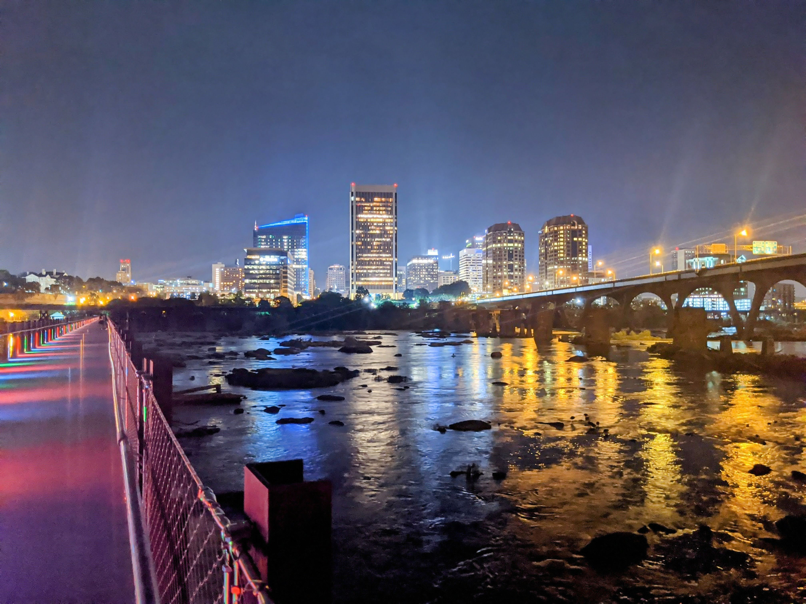

Home
Richmond
Virginia Beach
Lynchburg
Contact us
The Commonwealth of Virginia
Virginia is for L♡VERS!
Richmond

Facts
Richmond is the capital city of Virginia.
Richmond has a population of about 227,000 people.
Richmond was incorporated in 1742.
The city is located on the James River and is an urban city.
The average income for Richmonders is around $31,000